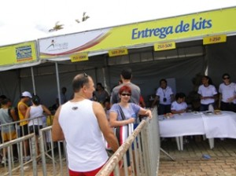
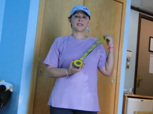

vamo, vamo, vamo…
1º Circuito de Corrida Farmacias Pague Menos – Salvador
Como havia escrito anteriormente, acompanhei o marido em viagem a Salvador. O clima estava bem agradável, temperatura em torno de 27/29º C, com chuvas esporádicas durante o dia.
Houve um dia que choveu de manhã, à tarde e a noite, chuvas passageiras com abertura de sol, tão diferente da nossa Sampa que, quando chove, chove o dia ou dias, a temperatura cai e o frio adentra nossa carne.
Salvador tem isso de ótimo, apesar da chuva a temperatura não cai, o que nos propiciou ótimas caminhadas pelo Pelourinho, pela Barra ou pela orla até Lauro de Freitas.
Não treinei apenas andei, andamos muito. Como no Rio de Janeiro consegui conciliar a agenda com alguma corrida local e, consegui! Acontece pelo país a 1ª Corrida Pague Menos, aproveitei para participar do circuito de Salvador.
Essa campanha visa despertar na população o gosto pela corrida para uma melhor qualidade de vida, tanto que existe o percurso de 1k (incentivo para os iniciantes), 4k e 8k. Como a inscrição podia ser feita via internet, sai de Sampa com a inscrição paga, pois a retirada do kit seria no dia anterior à corrida (ótimo, pois assim eu faria o reconhecimento local…)

entrega do kit
Eu e meu kit

A medalha
O kit é tudo de bom…. os patrocinadores não economizaram, valeu cada real pago.
Sábado (31/07) estava um dia lindo, céu azul e muito sol, chegou a noite e com ela veio a chuva.
Ajustei o alarme do celular para acordar cedo no domingo, só que perdi a hora, ou melhor o celular não despertou e acordei as 5hs55min., só fiz dar um pulo da cama, pois deveria estar até as 6h30min para retirar o chip, a corrida teria largada as 7 hs. Tratei de comer uma banana, me vestir rapidamente, olhei pela janela uma chuva intensa caia, achei por bem deixar a família no hotel… Começava assim minha corrida contra o tempo…
O taxista me deixou esperançosa dizendo que o percurso não demoraria mais de 10 min, no caminho vi a organização colocando os cones na avenida. Cheguei realmente com 10/13 min, peguei meu chip, a chuva ainda era intensa, não tinha muitos lugares cobertos para aguardar, alongamento antes da corrida só o que deu para fazer, faltaram espaços cobertos, pois a corrida contava com mais de 2000 inscritos.
Enquanto aguardava à hora da largada lembrei-me do Miguel dos Baleias, ele escreveu no seu blog (espero estar certa pela citação…rs) nunca molhe seu tênis. Eu mentalmente indagava ao Miguel “e agora Miguel? Ta chovendo muito, como não molhar o tênis???. O meu tênis novo!!!…..”. A preocupação era o tênis, não a eventual gripe ou a corrida em si.
A largada teve um atraso de 15 min. e, durante a espera a chuva acalmou e logo parou, alguns corredores reclamaram da demora e do frio, para mim estava ótimo, um pouco molhada, mas normal, apenas senti a falta da família para dar aquele apoio moral, enfim, deram a largada………. por falta de um bom alongamento e mais treinos, corri uma parte e outra caminhei mais rápido até que uma nativa resolveu caminhar comigo e assim fomos até a quase a chegada, quando corremos os metros finais.
Escolhi o percurso de 4k, no portal da chegada marcava 36’40 quando a cruzei e não demorou muitos minutos para a chuva voltar ………..
Terminei a corrida satisfeita com meu tempo, dentro de minha condição física achei que não foi tão ruim assim. Ainda consegui chegar a tempo no hotel para tomar o café da manhã com o dever do domingo cumprido.
Depois durante a semana procurei desesperadamente o tempo oficial e as fotos. O tempo no site diz que conclui a corrida em 36’50 (tempo liquido e bruto), as fotos não achei em nenhum site.
Absorvendo um pouco do blog do Namiuti, minha avaliação para essa corrida foram: (1- péssimo a 5- ótimo)
– Inscrição: 5 on line, rápido e fácil
– Retirada do kit pré-prova: 5 (organizado por ordem de inscrição, fácil localização e entrega)
– Acesso: 5 (no meu caso tranqüilo, fui de taxi e voltei de ônibus que me deixou próximo ao hotel)
– Largada: 2 (atraso de 15 min, o cronometro quando acusava 5 min zerou e perdemos a noção do tempo, ah, novamente esqueci no relógio!)
– Hidratação: 2 (apenas 1 posto de água)
– Percurso: 2,5 (apenas 1 faixa da avenida)
– Sinalização: 2 (apenas 1 placas indicando retorno para o trajeto de 4k, sem sinalização de metros)
– Segurança/Isolamento do percurso: 2,5 (apenas 1 faixa da avenida, estreita, pedestre em ponto de ônibus disputando vaga para pegar o ônibus)
– Apoio durante a corrida: 2,5 (um corredor passou mal e a equipe de apoio ficou pedindo água aos que passavam, enquanto o corredor ficou quase desfalecido na calçada;
– Chegada/Dispersão: 4 (sem problemas)
– Entrega do kit pós-prova: 4 (rápida)
– Qualidade do kit pós-prova: 5 (2 frutas, 1 barra de cereal, 1 barrinha de rapadura, 1 powerace)
– Camisetas: 3 (razoável com tecido de boa qualidade, mas tamanho único,tem de tomar cuidado para não esticar)
– Medalha: 4,5 (bonita lembrando a cor da camiseta e do site da corrida)
– Divulgação dos resultados: 2 (demoraram 3 dias para divulgar resultados, listagem com tempo igual para liquido e bruto)
Média: 4,9
.jpg "DSC01802 (1024x576)")
.jpg "DSC01806 (1024x576)")
.jpg "DSC01822 (1024x576)")
.jpg "DSC01866 (1024x576)")
.jpg "DSC01879 (1024x576)")


{kind=link}
{kind=link}
Ana, muito legal o relato. Interessante como está entrando no clima dos “corredores”.
Pelas condições (a chuva) seu tempo foi muito bom.
Continue assim.
Olá Ana, você é do ramo mesmo. Viajando, tem que encaixar uma corrida; perfeito. Sobre o tênis tô um pouco na dúvida se fui eu, mas de qualquer jeito, chovendo a máxima não tem como valer. Nas provas sem chuva fico muito atento nos postos dágua porque tem corredor que toma água e molha todo mundo em volta e também chutar os copos quase sempre tem efeito reverso. Grande abraço e agradeço de coração o carinho com a e. Baleias.
Parabéns Ana, fez um bom tempo continue assim.
AS fotos das corridas as veses demoram um pouco para aparecer, vou passar alguns sites que conheço que faz isso.
http://www.webrun.com.br
http://www.midiasport.com.br
http://www.cameraurbana.com.br
http://www.sportclick.com.br
Este blog está bom demais! A Ana Shibata saiu melhor do que a encomenda. Este espírito feliz nas festas de corrida ela trouxe com ela sem sequer ter lido o blog antes da primeira corrida dela. Repetirei mil vezes: uma grata surpresa!
Muito bem, Ana. O desempenho foi ótimo e só fará melhorar, naturamente.
Alecão
acho que estou virando uma maniac…………rs………… mas treinos que é bom………… nada ainda………..
Preciso baixar mais meu tempo……
Valeu!!!
Do ramo não Miguel, acho que mais para maniac……..rs……….
Sempre que tiver oportunidade ao viajar quero participar de uma corrida.
Chutar copo d’agua não é comigo……
Eu tb quero agradecer o carinho que nos tem dedicado.
Abs
Brigaduuuuuuuuuuu,
Se eu me dedicar aos treinos vou voar………..rs,
Valeu pelas dicas do site, 2 eu já conhecia.
Abs
Só me falta disciplina para os treinos………….
Ahhhhhhh, tomei gosto pelas corridas, e realmente é uma festa, ainda mais se for possível conciliar um passeio com uma corrida………
Agradeço a oportunidade de estar fazendo parte desse universo.